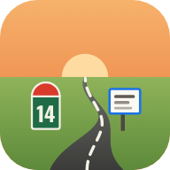

Règles de confidentialité
Application « Route du temps » — dernière mise à jour : 21 octobre 2026
« Route du temps » est une application web personnelle qui affiche votre agenda Google sous la forme d'une route. Elle fonctionne entièrement dans votre navigateur : il n'existe aucun serveur propre à l'application, et aucune donnée issue de votre compte Google n'est envoyée ailleurs que chez Google.
Un mode démo permet d'essayer l'application sans compte : il affiche un agenda fictif et ne demande, ne lit ni n'enregistre aucune donnée.
Données Google utilisées
Lorsque vous vous connectez avec votre compte Google, l'application demande les autorisations suivantes et les utilise uniquement pour :
- Événements de Google Agenda (
calendar.events) : lire les événements de vos agendas pour les afficher sur la route, et créer un événement lorsque vous le demandez. - Liste de vos agendas (
calendar.calendarlist.readonly) : savoir quels agendas (y compris ceux partagés avec vous) sont cochés, pour les afficher. - Fichiers Google Drive créés ou choisis via l'application (
drive.file) : envoyer dans votre Drive (dossier « Route du temps ») une photo ou vidéo que vous ajoutez à un événement, ou utiliser un fichier que vous sélectionnez vous-même. L'application n'a aucun accès aux autres fichiers de votre Drive. - Nom, adresse e-mail et photo de profil (
email,profile) : afficher votre nom dans la légende et votre avatar.
Partage des photos
Une photo ou vidéo ajoutée à un événement via l'application est réglée sur « Tous les utilisateurs qui ont le lien peuvent lire », afin que les personnes avec qui vous partagez votre agenda puissent la voir. Elle n'est pas publiée ni référencée. Vous pouvez modifier ce partage ou supprimer le fichier à tout moment dans Google Drive.
Stockage
- Les événements récupérés, vos réglages et un indicateur de connexion sont gardés dans le stockage local de votre navigateur, sur votre appareil.
- Pour retrouver les mêmes réglages sur vos autres appareils, une copie de vos réglages (agendas affichés et leurs noms, affichage du week-end, zone de vacances scolaires) est enregistrée dans votre propre Google Drive, fichier « Route du temps/reglages.json », grâce à l'autorisation
drive.file. Ce fichier ne contient aucun événement. - Le jeton d'accès Google reste en mémoire le temps de la session et n'est jamais enregistré ni transmis à un tiers.
- Aucun cookie publicitaire, aucun outil de mesure d'audience.
Partage avec des tiers
Vos données ne sont ni vendues, ni louées, ni transmises à des tiers. L'application contacte seulement :
- les API de Google (connexion, Agenda, Drive, profil) ;
- l'API publique du ministère de l'Éducation nationale (
data.education.gouv.fr) pour les dates de vacances scolaires — sans aucune donnée personnelle ; - Google Fonts et des bibliothèques d'icônes pour l'affichage.
Fonctions musicales facultatives, utilisées seulement si vous les activez, et qui ne reçoivent aucune donnée de votre compte Google :
- Spotify : lecteur Spotify intégré ou, si vous connectez vous-même votre compte Spotify, commande de lecture (lecture, pause, titre suivant) de votre appli Spotify. Les jetons Spotify restent dans votre navigateur ;
- YouTube : lecteur YouTube intégré pour une playlist dont vous donnez le lien ;
- radio : flux audio publics des stations, et annuaire libre
radio-browser.infopour la liste et la recherche de stations.
Utilisation limitée des données Google
L'utilisation et le transfert vers toute autre application des informations reçues des API Google respectent les Règles relatives aux données utilisateur des services d'API Google, y compris les exigences d'utilisation limitée. Ces données ne servent qu'à afficher et gérer votre agenda dans l'application ; elles ne sont pas utilisées à des fins publicitaires ni pour entraîner des modèles d'IA.
Supprimer vos données / retirer l'accès
- Dans l'application : « Se déconnecter de Google » révoque l'accès et efface toutes les données gardées dans le navigateur.
- À tout moment depuis votre compte Google : myaccount.google.com/permissions.
- Les événements et fichiers créés restent dans votre Google Agenda et votre Drive, où vous pouvez les supprimer.
Contact
Pour toute question, écrivez à l'adresse de contact indiquée sur l'écran de connexion Google de l'application.